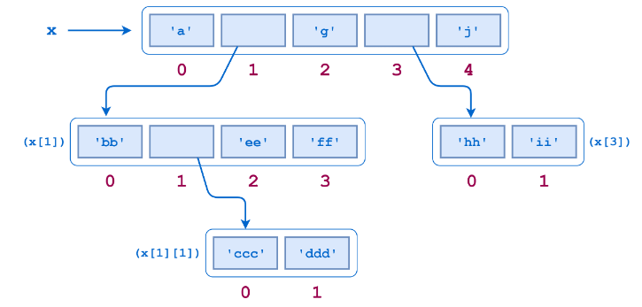

Vérifier par vous-même
Écrire un script qui permet d'afficher les deux éléments, du deuxième élément, du deuxième éléments du tuple x. (S'ils existent !!! )

Un élément d'une liste ou d’un tuple peut être n'importe quel objet. Cela comprend une autre liste. Une liste peut contenir des sous-listes, qui peuvent à leur tour contenir elles-mêmes des sous-listes, et ainsi de suite, à une profondeur arbitraire.
Exemple :

Que représentent les éléments x[1] et x[3] ?
Vérifier par vous-même
Vérifier par vous-même